Typographic Apperception Test
Research, test cards, supplemental material, box
7 x 5"
2013
I brought typography and psychotherapy together in this diagnostic tool designed to analyze personality. The Typographic Apperception Test is the product of thorough research, interviews with psychology professionals and students, and (once the idea was solidified and preliminary visuals made) testing to develop the final cards. The test requires the client to populate an abstract image (typographic in structure, but nonsensical) with unique meaning, utilizing apperception (the process of integrating a new idea into an existing mental framework to comprehend it) to draw out significance.
Designed under Oded Ezer in response to his Typotherapy project.
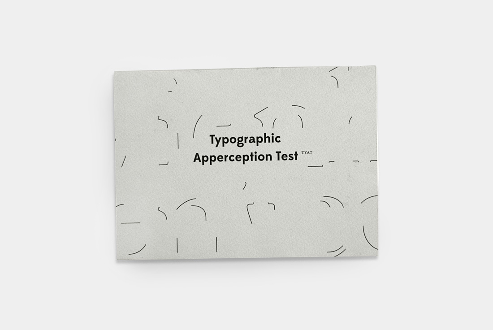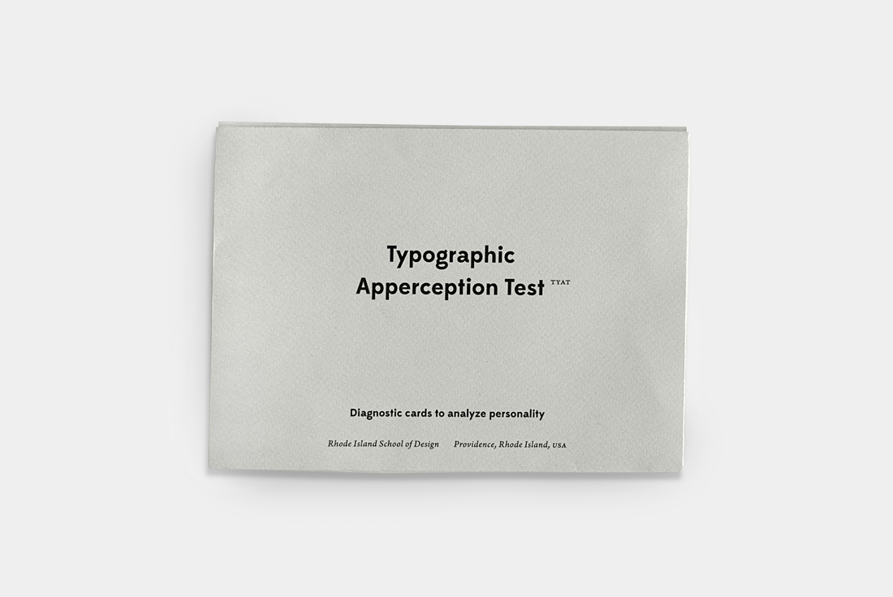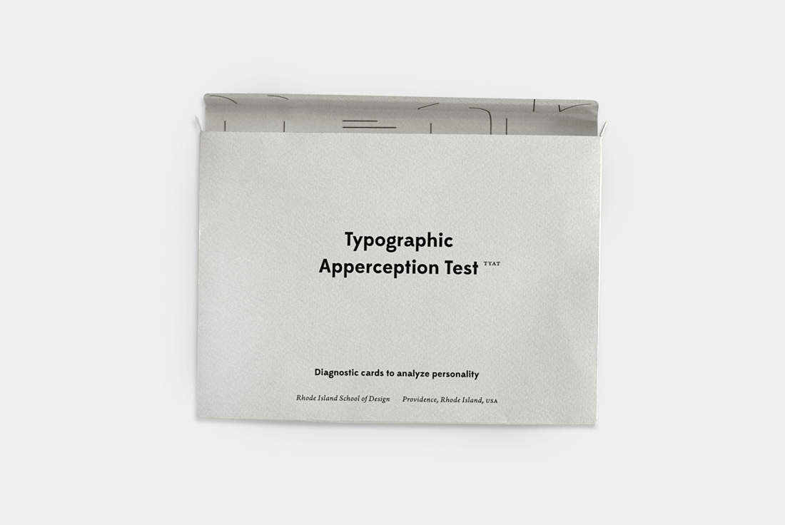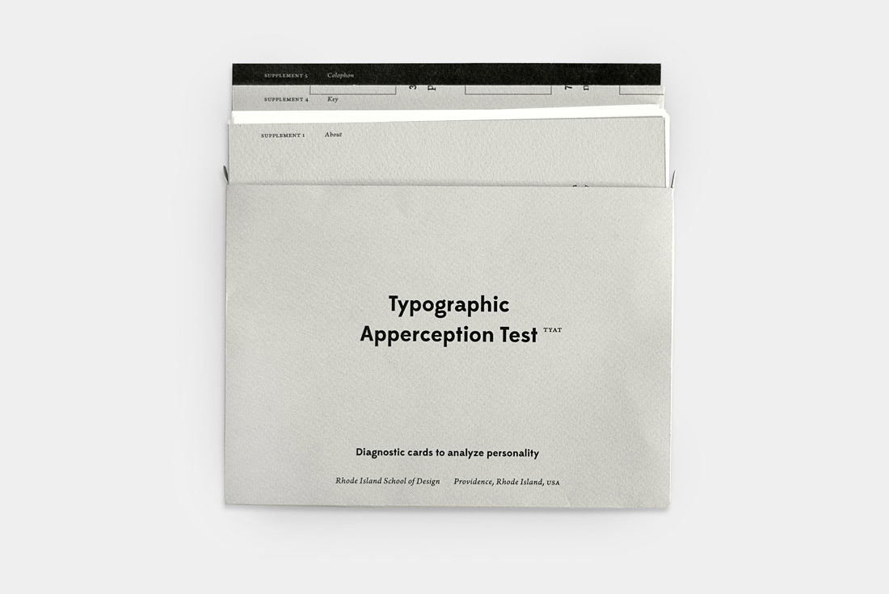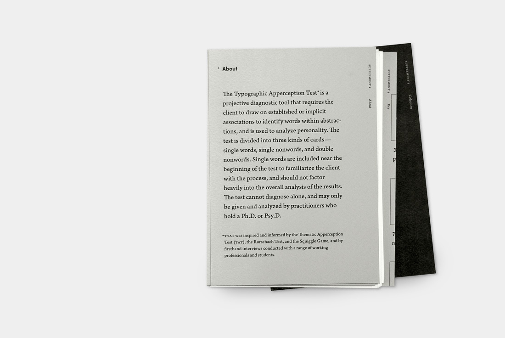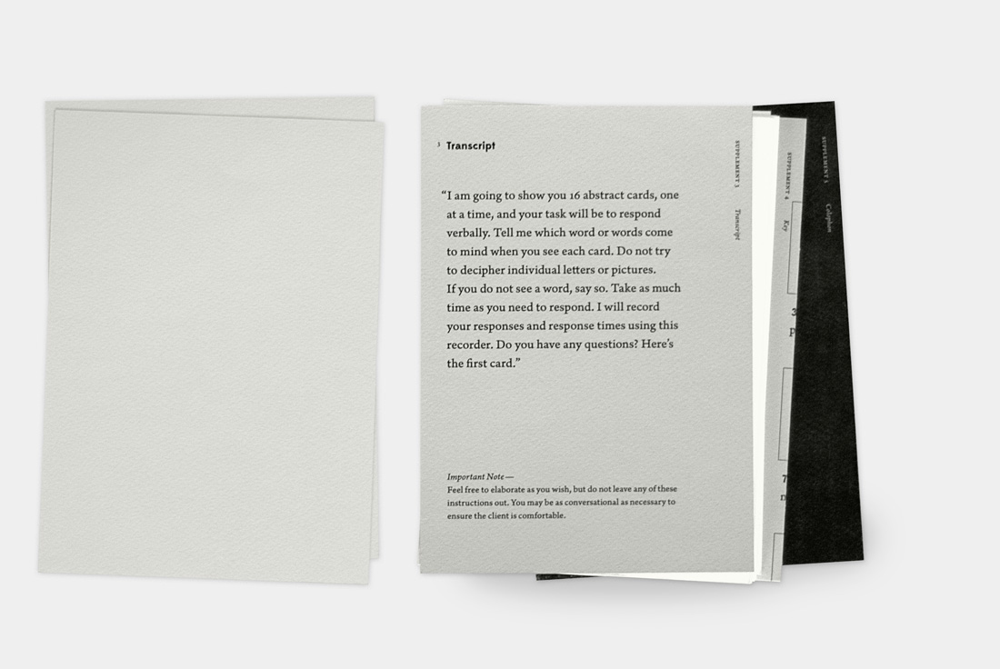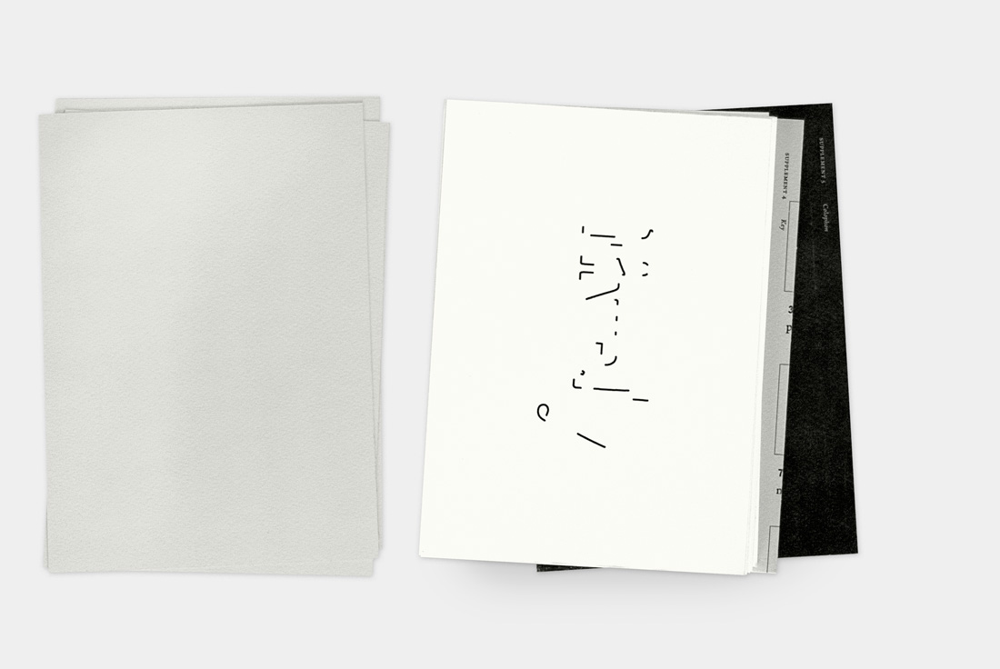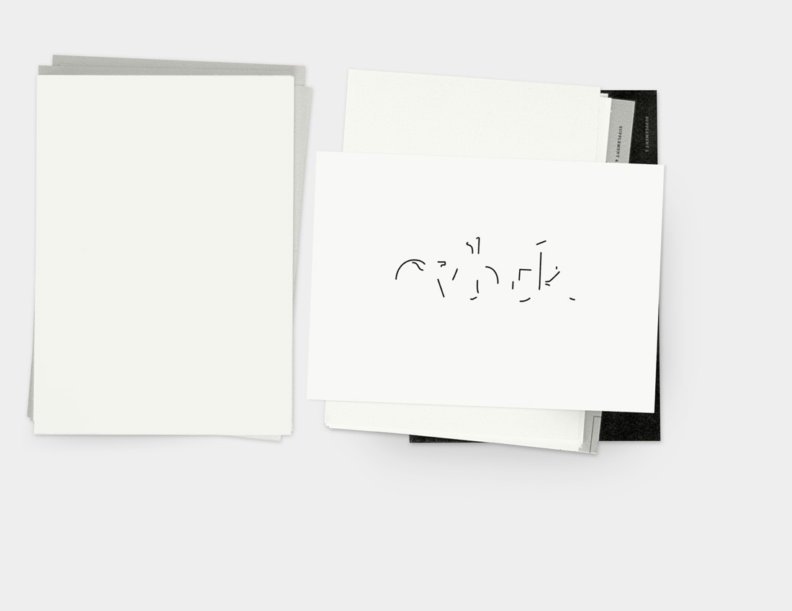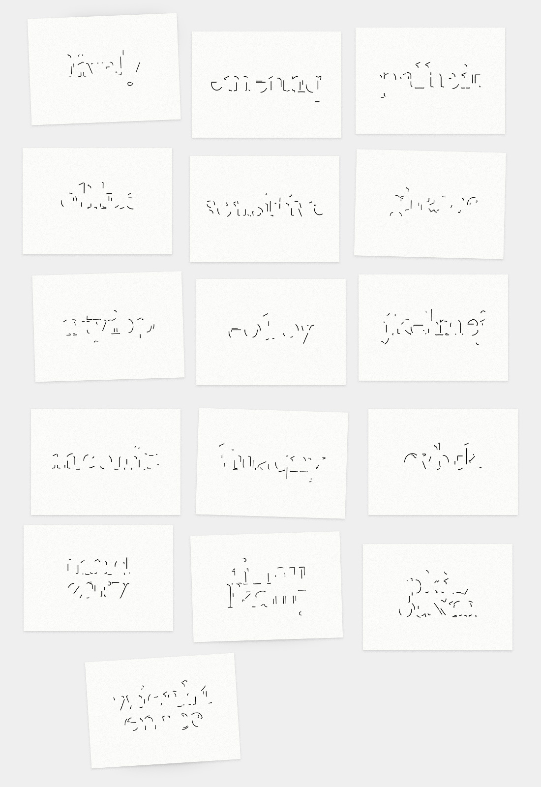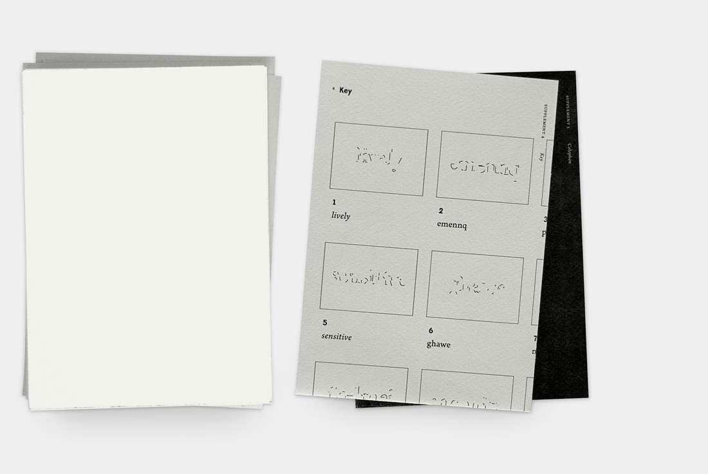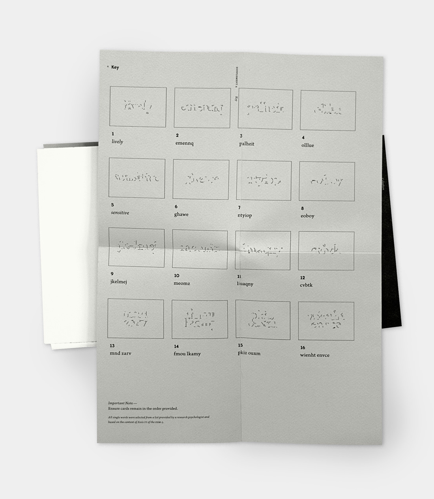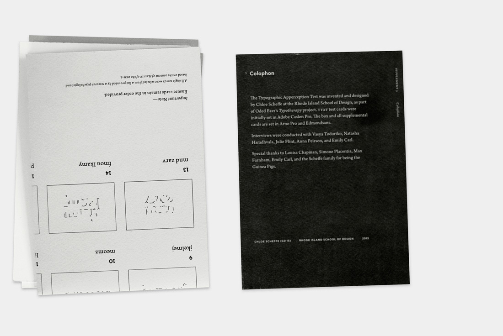